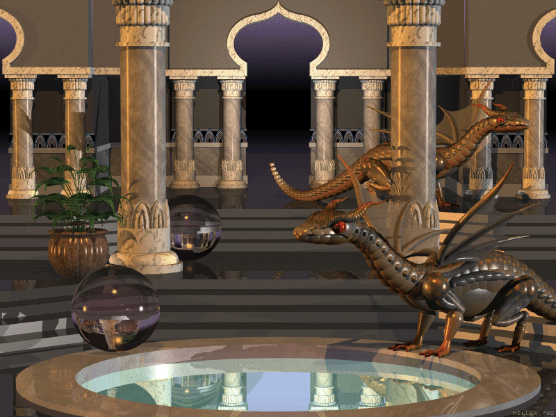
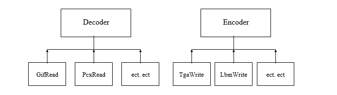

Programmet Bitmap Viewer er et billedviser/behandler som skal kunne lese, vise, manipulere
og konvertere mange typer bitmap-filer. Prosjektoppgaven skal lages i Borland C++ 4.0 med bruk
av OWL 2.0. Hovedvekten skal legges på konvertering mellom de forskjellige formatene, men en
viss grad av manipulasjon med bildet skal være mulig.
Kravspesifikasjon
Lesing/Skriving av filer
For å kunne manipulere og konvertere bitmap-filer, trengs det en hel del decodere og encodere for de
forskjellige formatene. Etter å ha programmert en del av disse encoderene og decoderene har jeg kunnet skrive en
spesifikasjon av hva som kommer til å bli støttet for decoding og encoding. Jeg tar også med begrensninger som
formatet har (ikke alle kan lagre f.eks. 24 bits bitmaps) og litt om pakke- og lagringsmetodene som blir brukt.
Hva som har blitt støttet har vært svært avhengig av hva jeg har tilgjengelig av dokumentasjon om de
forskjellige formatene og hvilke typer bitmaps som vanligvis lagres etter den støttede spesifikasjonen.
BMP, DIB, RLE - MaksBits : 24.
Disse tre formatene er så og si det samme formatet. BMP står for Bitmap og BMP-filer følger Windows eller
OS/2's
Device Independent Bitmap spesifikasjon. DIB står rett og slett for Device Independent Bitmap og RLE står for
n Length Encoding. RLE filene er pakket, enten med RLE-4 eller RLE-8. BMP filene og DIB filene kan også være
pakket med samme metode (det er det samme formatet, bare med annen betegnelse). RLE-4 står for Run Length
Encoding 4 bits og RLE-8 står for Run Length Encoding 8-bits. Pakking av 1-bits og 24-bits filer i dette
formatet forekommer ikke. BMP ukomprimert støtter 1, 4, 8 og 24 bits bitmaps, mens BMP komprimert støtter 4 og 8 bits
bitmaps.
Lesing :
Programmet vil lese alle filer som følger Windows eller OS/2's Device Indepentent Bitmap spesifikasjonen, også
filer pakket med RLE-4 og RLE-8.
Skriving :
Programmet kan skrive bitmaps i enten BMP, DIB, RLE formatet, hvor av filene kan pakkes med RLE-4 eller RLE-8,
eller ikke pakkes i det hele tatt (dette gjelder ikke for RLE filer). Programmet vil skrive disse filene etter
Windows Device Independent Bitmap spesifikasjon.
GIF - MaksBits : 8
GIF er CompuServe's eget filformat og står for graphics interchange format. Det finnes i dag 2 versjoner
av GIF, nemlig 87a og 89a. 89a er en utvidelse av 87a og kan inneholde animasjoner, samt flere bitmaps
og tillegsinformasjon. GIF bruker en svært effektiv pakkemetode kalt LZW (Lempel-Ziv & Welch). Begge
formatene kan være interlaced eller non-interlaced. GIF støtter 1, 4 og 8 bits bitmaps.
Lesing :
Programmet vil lese alle versjoner av GIF, både interlaced og non-interlaced. Hvis gif-filen inneholder
tilleggsinformasjonblokker (såkalte extension blocks), vil disse bli hoppet over og hvis en fil inneholder
flere en ett bilde, vil kun det første bildet bli lest.
Skriving :
Programmet vil kunne skrive 1, 4 og 8 bits bitmap ut i GIF87a formatet, non-interlaced.. Noe annet ville
vært unødvendig, siden de fleste programmer som støtter GIF, støtter denne spesifikasjonen.
IMG - MaksBits : 8
IMG formatet er mest assosiert med programmer fra Digital Research og kom som en erstatning for MacPaint
formatet. Formatets nye spesifikasjon støtter idag både svart-hvitt, gråskala og farge-bilder. IMG
formatet er derimot mest brukt til svart-hvitt bilder (1 bits). IMG bruker en spesiell form for
run-length encoding for pakking av bitmaps.
Lesing :
Programmet vil kun lese 1-bits IMG filer. Dette kommer av at det er svært få gråskala og farge IMG bilder i
sirkulasjon og av at jeg mangler dokumentasjon på hvordan disse er lagret.
Skriving :
Programmet vil kunne lagre alle 1 bits bitmaps i IMG-formatet.

LBM - MaksBits : 8
IFF og LBM formatet kommer opprinnelig fra Amiga, og var deres standardfilformat for bitmap-filer. En LBM filer
er svært fleksible og kan inneholde ikke bare bitmaps, men også musikk, animasjoner ect. LBM filer som
inneholder bitmaps kan enten være ukomprimerte eller pakket med en egen form for Run-Length Encoding.
Formatet støtter 1, 4 og 8 bits bitmaps. Jeg har også lest et sted at den støtter 24-bits bitmaps, men
der finnes i såfall svært få slike LBM filer i sirkulasjon (har ikke funnet et program på PC'en som
genererer LBM-filer med 24 bits/pixels.). 1 bits bitmaps er lagret som 1 bit per pixel, 1 plane. 4 bits
er lagret som 1 bit per pixel, 4 color planes og 8-bits bitmap kan enten være lagret som 1 bit per
pixel, 8 color planes eller som 8 bits per pixel, 1 color plane. Det finnes også variasjoner av IFF/LBM
filer som bruker et metode kalt HAM, som står for hold and modify. Denne variasjonen er brukt i
forbindelse med video-kortet på Commondore Amiga og filer som har en slik variasjonen forekommer sjelden i
PC-miljøet.
Lesing :
Programmet vil lese 1, 4 og 8 bits IFF/LBM filer, alle color planes støttet. Den vil lese både
komprimerte og ukomprimerte filer. Filer som er lagret med HAM-metoden vil ikke bli støttet.
Skriving :
Programmet vil skrive 1, 4 og 8 bits bitmaps i IFF/LBM formatet, pakket.
MAC - MaksBits : 1
MacPaint formatet kommer opprinnelig fra Apple Macintosh og er idag et svært lite brukt format. Det
finnes allikevel en del MacPaint filer i sirkulasjon, og jeg bestemte meg for å støtte dette formatet i
programmet mitt. MacPaint filer støtter kun 1-bits svart-hvitt bilder, med en fast størrelse, nemlig 576
x 720 pixels. Det finnes 2 variasjoner, MacPaint filer uten en MacBinary-header og filer med en slik
header. De fleste MAC-filene i sirkulasjon har en header. MacPaint-formatet bruker en form for
Run-Length Encoding for å pakke bitmaps.
Lesing :
Programmet støtter alle typer MacPaint-filer med eller uten en MacBinary header.
Skriving :
Programmet kan skrive 1-bits bitmaps av størrelse 576 x 720 i MacPaint formatet, med en MacBinary
header.
MSP - MaksBits : 1
MSP formatet ble laget for bruk under Windows 1.0 og 2.0 og kan i dag fremdeles leses av PC Paintbrush
pakken som følger med nyere versjoner av Windows. MSP støtter kun svart-hvitt bilder (1 bits) og det
finnes 2 versjoner, hvorav begge bruker en form for Run-Length Encoding.
Lesing :
Programmet vil kun lese 1-bits IMG filer. Dette kommer av at det er svært få gråskala og farge IMG bilder
i sirkulasjon og av at jeg mangler dokumentasjon på hvordan disse er lagret.
Skriving :
Programmet vil kunne lagre alle 1 bits bitmaps i IMG-formatet.
PCX - MaksBits : 24
PCX formatet ble laget i forbindelse med Z-Soft's PC Paintbrush. PCX formatet støtter i dag 1, 4, 8 og
24 bits bitmaps. Tildligere versjoner støttet kun 1 og 4 bits bitmap, men dette har senere blitt endret
på. PCX formatet bruker en egen form for Run-Length Encoding. Det finnes 4 versjoner av PCX-formatet i
dag, helt opp til versjon 5. 1 bits bitmaps lagres i PCX formatet som 1 bit per pixel, 1 color plane, 4
bits som 1 bit per pixel, 4 color planes og 8 bits som 8 bits per pixel, 1 color plane. 24 bits bitmaps
er lagret som 8 bits per pixel, 3 color planes.
Lesing :
Programmet vil kunne lese PCX-filer med 1, 4, 8 og 24 bits bitmaps, alle versjoner støttet.
Skriving :
Programmet kan skrive alle typer bitmaps (1, 4, 8 og 24 bits) ut i PCX filformat, versjon 5.
TGA - MaksBits : 32
TGA formatet oppstod ved utgivelsen av The Truevision Targa video kortet, og formatet støtter bilder av
alle dimensjoner med 1, 8, 16, 24 eller 32 bits per pixel. Bitmap dataene er som regel lagret
ukomprimert, men TGA-formatet kan også bruke en form for Run-Length Encoding.
Lesing :
Programmet vil kunne lese alle typer TGA filer med enten 1, 8, 16, 24 eller 32 bits per pixel. 16 og 32
bits vil bli lest som 24-bits bitmaps. Komprimerte TGA-filer er også støttet for lesing.
Skriving :
Programmet kan skrive 1, 8 og 24 bits bitmaps ut til fil i TGA-formatet. Bitmap-dataene vil være
ukomprimert, siden denne metoden er mest brukt.
TIFF - MaksBits : 24
TIFF formatet står for Tagged Image File Format og var en spesifikasjon laget av Aduls og Microsoft som
skulle være utvidbar og støtte det meste man kunne komme opp med innenfor grafisk bruk av datamaskinen.
Dette har ført til en hel haug med forskjellige variasjoner av TIFF-filer, noe som gjør det svært
vanskelig å skrive en komplett TIFF-decoder. TIFF støtter 1, 4, 8 og 24 bits bitmaps, lagret enten i ett
eller flere planes, og kan være pakket på 6 (eller flere) forskjellige måter. Å skrive en komplett
TIFF-decoder som støtter alle disse variasjonene av tags og pakkemetoder ville minst tatt et halvt år
alene.
Lesing :
Programmet kan lese fleste ukomprimerte enkeltplanare TIFF filer og TIFF filer pakket med metode 32773
(Macintosh PackBits Run-Length Encoding.) Disse kan være 1, 4, 8 eller 24 bits.
Skriving :
Programmet vil kunne skrive alle typer bitmaps ut i TIFF formatet, enten ukomprimert eller pakket med
Macintosh PackBits Run-Length Encoding.
WPG - MaksBits : 8
WPG-formatet ble laget i forbindelse utgivelsen av Word Perfect, og var et nytt format som støttet både
vektor-grafikk og bitmaps. WPG-formatet kan lagre 1, 4 og 8 bits bitmaps og bruke en egen form for
Run-Length Encoding, som så mange grafiske filformat gjør. Desverre kom det en liten endring i dette
formatet ved utgivelse av Word Perfect 5.1. Denne spesifikasjonen har jeg ikke greid å få tak i og vil
derfor ikke bli støttet.
Lesing :
Programmet vil bare støtte lesing av WPG bitmap filer lagret etter spesifikasjonen utgitt med Word
Perfect ver. 5.0.
Klassestruktur for Encodere og Decodere
For å lage encodere og decodere til alle disse filformatene, vil jeg opprette to abstrakte base klasser, nemlig
class decoder og class encoder. Klassene for lesing og skriving av de forskjellige formatene vil arve egenskapene
til disse klassene (se diagram).

Decoder og encoder baseklassene vil inneholde en del "null-virtual" funksjoner. Disse funksjonene er basisen for å
åpne, lese, skrive og få informasjon de grafiske filene. Hvordan disse blir implementert i de deriverte klassene
kan være forskjellig, men de må eksistere. Ved å implementere decoderene og encoderene slik vil man kunne bruke
kun en funksjon for å lese og skrive bitmapfiler.
>
Som parameter til disse funksjonene sendes den valgte decoder/encoder. Eks.
void SelectFile()
{
..........
TgaRead RTGA; // Opprette instance av klasse
FileOpen(RTGA); // Sende som parameter.
..........
}
Lagring av fildata i minne.
For å kunne konvertere lett mellom de forskjellige filformatene vil det bli opprettet en klasse kalt DIB. Denne
klassen fungerer uavhengig av owl-klassene og skal inneholde generell informasjon om bitmappene (høyde, lengde)
samt bitmapbits og en eventuellt palette. Denne klassen skal sendes med som parameter til decoder- og
encoderklassenes Read og Write funksjoner. Den skal også sørge for minneallokering av bitmap, insetting av linje,
pekere til bitmapdata ect. ect. Disse servicene vil bli tatt i bruk av decoder- og encoderklassene. (Se diagram).